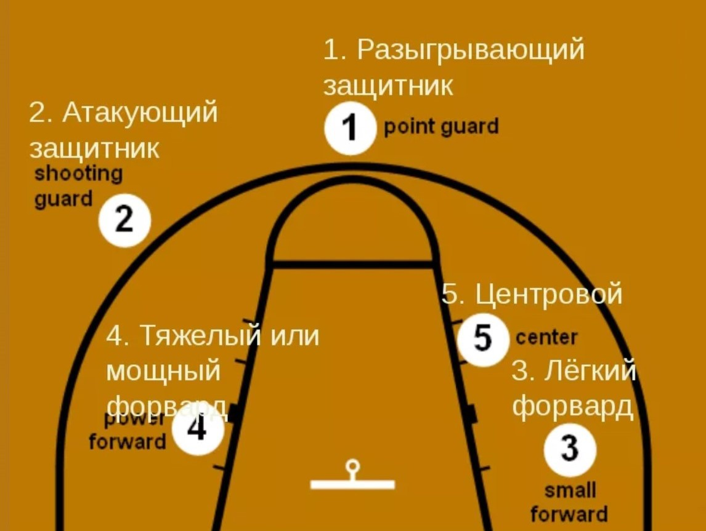

Основные элементы игры
- Дриблинг - в ряде видов спорта манёвр с мячом, смысл которого состоит в продвижении игрока мимо защитника, регламентированного правилами, при сохранении мяча у себя.
- Передача мяча - один из важнейших и наиболее технически сложных элементов баскетбола, самый главный элемент в игре разыгрывающего защитника.
Умение правильно и точно передать мяч — основа чёткого, целенаправленного взаимодействия баскетболистов в игре.
Результативная передача - пас на игрока, впоследствии поразившего кольцо соперника. Результативная передача учитывается в финальном протоколе.
- Подбор - важнейший элемент при игре в баскетбол, спортивная «кража» мяча, при котором игрок овладевает мячом после неудачной попытки двух- или трёхочкового броска или последнего штрафного броска.
Различают несколько видов подборов: подбор в нападении, на чужом щите; подбор в защите, на своём щите;коллективный подбор.
- Перехват - в баскетболе действия игрока обороны по завладению мячом. Перехват мяча выполняется при передаче игроков атаки.
При утрате контроля над мячом атакующей команде вследствие перехвата защитниками в статистическом отчете матча записывается потеря.
После перехвата мяча защищающаяся команда имеет шанс перейти в быстрый прорыв и набрать «лёгкие» очки.
- Блок-шот - баскетбольный термин, означающий ситуацию, когда игрок защиты блокирует по правилам бросок соперника.
Основными блокирующими игроками являются игроки передней линии — центровые и тяжёлые форварды.
Однако игроки других позиций, имеющие хороший прыжок и координацию, зачастую становятся лучшими в данном показателе.
Блок — показатель, характеризующий действия баскетболиста в защите.
- Позиции(амплуа) игроков на поле - в баскетболе в основном их три: защитник, форвард и центровой. Если детализировать, то по амплуа игроков можно разделить на 5 категорий: разыгрывающий защитник, атакующий защитник, лёгкий форвард, тяжёлый (или мощный) форвард и центровой.
